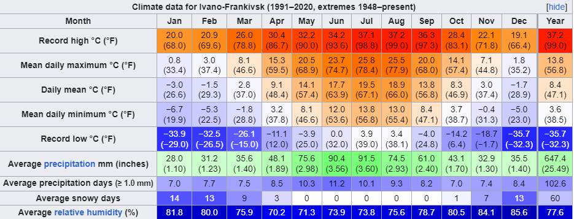

My hometown Ivano-Frankivsk
Overview
Ivano-Frankivsk (Ukrainian: Івано-Франківськ), formerly Stanyslaviv and Stanislav, is a city in western
Ukraine. It serves as the administrative centre of Ivano-Frankivsk Oblast as well as Ivano-Frankivsk Raion within the oblast. Ivano-Frankivsk also
hosts the administration of Ivano-Frankivsk urban hromada. Its population is 238,196 (2022 estimate).
Built in the mid-17th century as a fortress of the Polish Potocki family, Stanisławów was annexed to the Habsburg Empire during the First Partition of
Poland in 1772, after which it became the property of the State within the Austrian Empire. The fortress was slowly transformed into one of the most
prominent cities at the foothills of the Carpathian Mountains. After World War I, for several months, it served as a temporary capital of the West
Ukrainian People's Republic. Following the Peace of Riga in 1921, Stanisławów became part of the Second Polish Republic. After the Soviet invasion of
Poland at the onset of World War II, the city was annexed by the Soviet Union, only to be occupied by Nazi Germany two years later. With the
liberation of Soviet Ukraine in 1944 and the shifting of borders, the city remained part of the Ukrainian SSR and was renamed in 1962 after
Ivan Franko. With the fall of the Soviet Union in 1991, the city become part of newly independent Ukraine.
Ivano-Frankivsk is one of the principal cities of the Carpathian Euroregion. There are elements of various cultures intertwined in the city's
architecture, including the Polish city hall, the Austro-Hungarian city's business centre, the Soviet prefabricated apartment blocks at the city's
ruralurban fringe, and others.
City advantages:
- Location in Ukraine
- Sightseeings
- Infrastructure
- Job
- Best city to live
| Established | Area | Population |
|---|---|---|
| 1662 | 83.7 km2 | 238,196 |
Watch Ivano-Frankivsk on YouTube!
Geography
The city is situated in the Carpathian region northeast of the mountain range, sitting approximately 120 metres (390 ft) above mean sea level. One of the several main geographical features is the Vovchynets Hill also known as the Vovchynets Mountains. The hill reaches 300-350 metres (1,150 ft) above sea level and is part of the Pokuttya Highland (Upland). Around the hill Bystrytsia River branches into Bystrytsia of Nadvirna, Bystrytsia of Solotvyn, and Vorona. The last two rivers serve as a natural border between the Pokuttya Highland and Stanislav Basin. The Vovchynets Hill is located just outside and northeast of Ivano-Frankivsk. Located southeast from the Stanislav Basin in the direction of the Prut Valley is the Khorosnen (Prut-Bystrytsia) Highland. The highest point of that highland is Mount Hostra, 425 metres (1,394 ft). The closest neighboring city is Tysmenytsia, less than 10 kilometres (6.2 mi) to the east. Other cities that lie in the radius of 25 to 30 km (16 to 19 mi) are Tlumach (east), Nadvirna (south), Kalush (west), and Halych (north). The city also administers five adjacent villages that surround it: Mykytyntsi, Krykhivtsi, Vovchynets, Uhornyky, and Khryplyn.
Climate
As is the case with most of Ukraine, the climate is moderate continental with warm summers, and fairly cold winters. The following climate data provided is for the past 62 years. The average number of days with precipitation is 170 spread almost equally throughout a year. Most precipitation takes place during the winter months and least – early fall. Thunderstorms occur mostly in summer months averaging around 25 annually. Ivano-Frankivsk averages about 296 days of fog or misty days with about 24 per month.
Education
The city has over 25 public schools of general education for grades 1 through 11. There are also some privately owned schools and lyceums. In addition, the city has several professional public institutes. There also numerous sports schools: Fitness Sport Association "Ukraine" – 5 schools, MVK – 3 schools, Fitness Sport Association "Spartak" – 2 schools, Fitness Sport Association "Kolos" – 1 school, and the others.
-
Vasyl Stefanyk Precarpathian National University
Shevchenko Street 57, Ivano-Frankivsk, Ivano-Frankivsk Oblast, 76018, Ukraine
About
The Precarpathian National University (abbreviated as PNU) is a public research university in Ivano-Frankivsk. It is one of the oldest institutions of higher education in Western Ukraine. Currently, the University unites eight educational institutes, six faculties, three educational and consulting centers, one college, eleven research centers, Postgraduate Educational and Pre-university Training Center, Information Technology Center, the Center of Distance Learning and Knowledge Control, Teaching Management, Scientific and Research Department, Dendrological Park (Arboretum) and Botanical Garden.
Open from to on weekdays
-
Ivano-Frankivsk National Technical University of Oil and Gas
Karpatska Street 15, Ivano-Frankivsk, Ivano-Frankivsk Oblast, 76019, Ukraine
About
Ivano-Frankivsk National Technical University of Oil and Gas is an institution of higher education in Ivano-Frankivsk, Ukraine. Since its establishment in 1967, the university has been known for preparing qualified and experienced specialists for the oil and gas industries. However, it has expanded to offer education in economics, management and law that is directly related to the needs of energy industry. Ivano-Frankivsk Oil and Gas University has a two-pronged approach toward education of its students: in the classrooms and in the field. In the classroom, students are provided the theoretical knowledge. Then, by working at university "field-classrooms" or by holding internships with regional businesses and organizations, the future specialists gain practical experience.
Open from to on weekdays
-
Ivano-Frankivsk National Medical University
Halytska St. 2., Ivano-Frankivsk, Ivano-Frankivsk Oblast, 76019, Ukraine
About
Ivano-Frankivsk National Medical University is an institute of higher medical education in Ivano-Frankivsk, Ukraine. The university is an accredited Higher Education institution and provides medical education from undergraduate to postgraduate level. The university history started in 1945 and is listed in the WHO Directory of Medical Schools and in the US FAIMER International Medical Education Directory (IMED). The university is one of the few Medical Universities in Ukraine to be designated as a “National Medical University” by the government of Ukraine.
Open from to on weekdays
-
King Daniel of Galicia Ivano-Frankivsk University of Law
E. Konovaltsia, 35, Ivano-Frankivsk, Ivano-Frankivsk Oblast, 76018, Ukraine
About
The University was founded in 1997 by a rector, a priest, an academician of the UAS, Doctor of Jurisprudence, Doctor of Law, Doctor of Philosophy, Doctor of Canon Law, Professor, an owner of the Excellence in Education of Ukraine Badge Father Ivan Lutskyi.
Open from to on weekdays